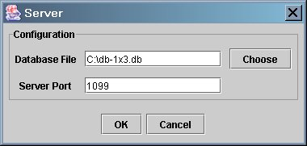
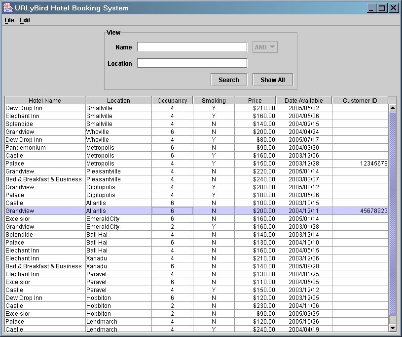
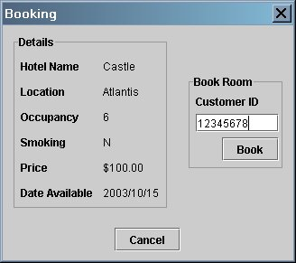

URLyBird User Guide
Starting the Application
The Main Window
Searching for Bookings
Making a Booking
Exiting the Application
Back to Top
Starting the Application
The URLyBird hotel booking system has 3 modes of operation: network server,
network client and standalone mode. Upon starting the application you will be
presented with a configuration window that enables you to set the operating
parameters of the program.

The first time you run the program a warning will be displayed indicating that
the program is unable to load settings from a saved configuration file and will
be using default settings. When you run the program it will save your settings
and load them on subsequent occasions so that the configuration dialog will be
pre-loaded with your previous settings.
Network Server Mode
To start the network server type:
java -jar runme.jar server
The configuration window will ask for:
- Database File - the database file to use.
- Server Port - the port number on which the server should listen for
network client connections. The default port is 1099.
If the database file is valid and the port you selected is not already in use
then you should see a message informing you that the network server has
started. On clicking OK on this message the server will run with no further
interaction.
Network Client Mode
To start the network client type:
java -jar runme.jar
The configuration window will ask for:
- Server Host - the IP address or DNS name of the URLyBird network
server to connect to.
- Server Port - the port number the server to connect to. The default
port is 1099.
If the client is able to successfully connect to the specified port on the
specified host the main window will be displayed. Otherwise, an error message
will be displayed.
Standalone Mode
To start in standalone mode type:
java -jar runme.jar alone
The configuration window will ask for:
- Database File - the database file to use.
If the database file is valid the main window will be displayed.
Back to Top
The Main Window
The main window looks like this:

The window is divided into two areas:
- The area labelled "View" at the top where the user specifies which bookings
will be displayed.
- The booking table where bookings are displayed. Either all bookings or
those specified by search criteria entered by the user in the "View" area.
Back to Top
Searching for Bookings
You can search for hotel bookings by the hotel name and the location.
- Searching by Hotel Name
- To search for hotel bookings for hotels with a specific name, enter the
hotel name in the "Name" field in the "View" area at the top and then hit the
"Search" button.
Bookings for hotels whose name matches exactly the
name you entered will be displayed in the booking table below.
- Searching by Hotel Location
- To search for hotel bookings for hotels at a specific location, enter the
hotel location in the "Location" field in the "View" area at the top and then
hit the "Search" button.
Bookings for hotels whose location matches exactly the
name you entered will be displayed in the booking table below.
- Searching by Hotel Name and Location
- If you enter both a hotel name and a hotel location in the two fields in
the "View" panel then you will be able to search for hotels with a specific
name at a specific location. There are two types of search that can be
performed depending on whether you select AND or OR from
the selector that will now be activated to the right of the "Name" field:
- AND - When you hit "Search" bookings with both the
exact hotel name and the exact hotel location that you specified will
be displayed.
- OR - When you hit "Search" bookings with either
the exact hotel name or the exact hotel location that you specified
will be displayed.
An example is shown below where the user has searched for bookings at
either the "Elephant Inn" hotel or at the location "Smallville".
- Showing All Bookings
- To show all hotel bookings in the system hit the "Show All" button in the
bottom-right of the "View" panel. This will display all bookings regardless of
what is entered in the "Name" and "Location" fields.
You can toggle between displaying all bookings or just those for your specified
search criteria by hitting "Show All" and "Search" alternately.
Back to Top
Making a Booking
In order to allocate a hotel booking to a specific customer:
- Select the required booking by clicking once with the mouse on the
corresponding row in the booking table so that it is highlighted.
- Select "Edit Booking" from the "Edit" menu at the top.
Note: alternatively you can just double-click with the mouse on the
appropriate row in the booking table instead of performing steps 1 and 2.
- If it is too early before the room is available to make a booking then a
message will be displayed informing you of when the room can be booked.
- If it is close enough to the date the room is available and the reservation
you selected is not currently being booked by another customer services
representative then the Booking dialog will be displayed (see below).
- If the reservation you selected is currently being booked by another
person then you will see a message saying:
Waiting to obtain lock on record
This message will be displayed until the other person currently working with
the selecting booking has finished and then the Booking dialog will be
automatically displayed. All you can do at this point is wait for the Booking
dialog to appear when the booking becomes available for altering.
Note: In this version of the system if someone else in addition to you
is waiting to work with the booking you have selected then when the booking
becomes available the other person may get to edit the booking before you
even if you started waiting for the booking first. It is effectively
random as to which person waiting for the booking gets to work with it first.
The Booking dialog looks like this:

On the left are the details for the hotel booking and on the right is the
"Book Room" panel where you enter the customer ID corresponding to the
customer who wants to book the room.
Booking the room
- Enter the 8-digit customer ID number in the "Customer ID"
field in the "Book Room" panel on the right of the Booking dialog.
- Hit the "Book" button below the "Customer ID" field.
- You should see a message saying:
Booking allocated to customer <customer ID number>
where <customer ID number> is the 8-digit customer ID number
that you entered.
Note: If you entered an invalid customer id, such as the wrong number of
digits, an error message will be displayed and you should hit "OK" on this
and then you will be able to try again.
- Hit "OK" in the box where the booking confirmation message above was
displayed and you will be returned to the main window.
If you decide that you do not want to edit the booking for this room then
just hit the "Cancel" button at the bottom of the Booking dialog and you will
be returned to the main window.
Changing or cancelling a booking
In order to change or cancel a booking simply open the Booking dialog for
the booking you want to alter by selecting "Edit Booking" from the "Edit"
menu or by double clicking on a row in the booking table then:
- To change the booking - enter the new 8-digit customer ID number and
hit "Book" in the same way as making a new booking above.
- To cancel the booking - delete the customer ID number so that the
"Customer ID" field is blank and then hit "Book". You should see a message
saying "Booking cancelled" and there will no longer be a customer ID number
showing for the selected booking in the main booking table.
Note: You can only work with one booking at a time.
Back to Top
Exiting the Application
Exiting the client
To exit the client select "Exit" from the "File" menu.
You must close the Booking dialog first if it is open.
Stopping the server
There is no graphical interface for stopping the server as it is meant
to run as a non-interactive background service on the server machine.
To stop the server you must either hit CTRL-C in the terminal/shell window
in which you started it or if it is running in the background kill the
corresponding process by whatever method is appropriate for the operating
system under which the server is running.